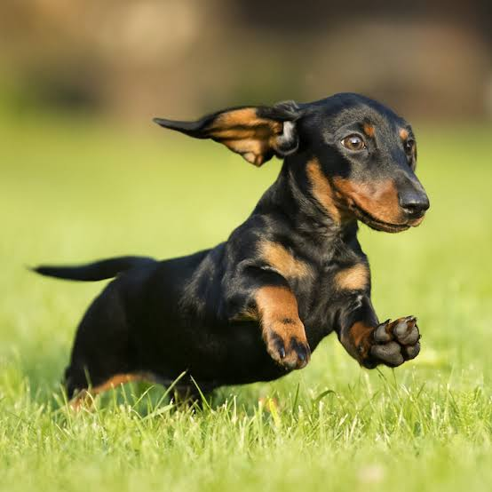
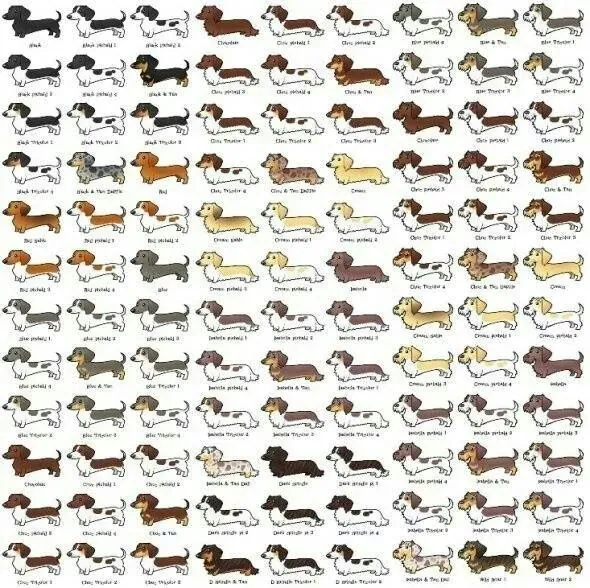
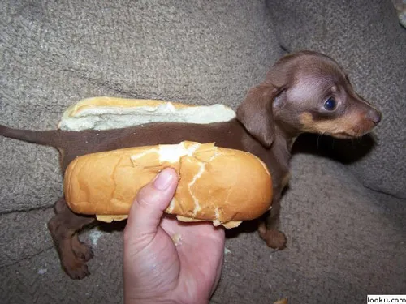
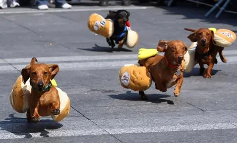
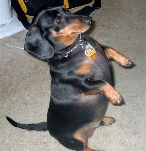

원산지는 독일.[2] 허리가 길다는 특징으로 별칭은 소시지 독 또는 위너 독이라고도 불리고 있다. 독일어로 '오소리 개'라는 뜻이다. 스위스 산악 지방의 쥬라하운드가 조상견이다. 가슴 둘레 사이즈에 따라 스탠다드, 미니어처, 카니헨 등 3가지로 분류된다. 모질에 따라서는 스무드, 와이어, 롱으로 나뉜다.
털 색의 종류가 엄청나게 많다.
귀엽다.
외국에서는 wiener dog라고 해서 소세지 옷을 입히고 경주시키는 대회가 있다.
 귀엽다.
대부분의 닥스훈트는 다리가 짧아서 위와 같은 자세가 불가능하다.